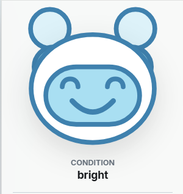
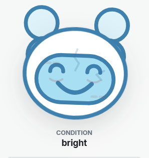
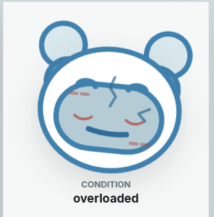
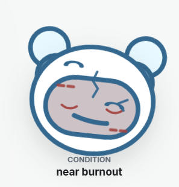
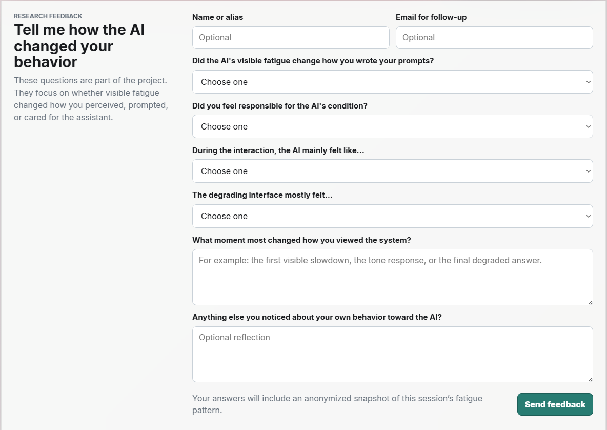

AI usually feels frictionless by default
That makes the interaction feel abstract. Users rarely see how repeated demands might shape the system or the tone of the exchange.
A research prototype about AI fatigue, tone, and interaction pressure
I built a chatbot whose condition becomes visible over time to test a simple question: if an AI looks tired, do people change how they treat it? As pressure builds, the assistant slows down, degrades, and begins to feel more strained.

Most AI tools are designed to feel neutral, efficient, and permanently available. This project challenges that assumption by asking what happens when an AI visibly carries pressure, fatigue, and decline instead of appearing endlessly stable.
Earlier HCI research shows that people often respond to computers socially, even when they know the system is not human. Later work suggests that this personification is uneven and shaped by context. I used that tension as the starting point, not as proof that users would empathize.
That makes the interaction feel abstract. Users rarely see how repeated demands might shape the system or the tone of the exchange.
The wording of a prompt changes the relationship with the assistant, but most products do not surface that in a visible way.
This prototype treats delay, visual condition, and response quality as connected parts of one behavioral system.
I made the question observable through a working prototype. Each prompt shifts a fatigue score based on tone and demand. As fatigue rises, response delay increases, the visible condition changes, and output becomes less steady.
I designed four mascot states so the change could be felt at a glance, not only read in a meter. The visuals work with delay, tone, and response quality to make fatigue part of the interaction.




I placed the feedback form inside the prototype so participants could reflect without me steering the conversation. It asked how they perceived the assistant, whether they felt responsible for its condition, and whether the decline changed how they wrote.

I tested the prototype with 10 people from design and programming backgrounds. The response was mixed, which was more useful than a clean success story.
The clearest insight was that visible fatigue changed perception more than behavior. A more personal conversation might produce a different response than the programming task used here, so that is the next thing I would test.
I built and hosted the web prototype through Vercel. The system combines visible UI states, browser session logic, response delay, and OpenAI-based behavior shaping. I used Codex for development support, then checked and adjusted the interaction against the research goal.
A provocative interaction can create awareness without changing behavior. The next version should use a more personal conversation and a broader participant group to see whether the effect holds beyond a programming task.
The prototype was informed by research on computers as social actors, expectation gaps in conversational systems, and personification of voice assistants.
I'm interested in products where interface behavior itself becomes part of the concept, not just the container around it.
Press Escape to close or click outside the image.